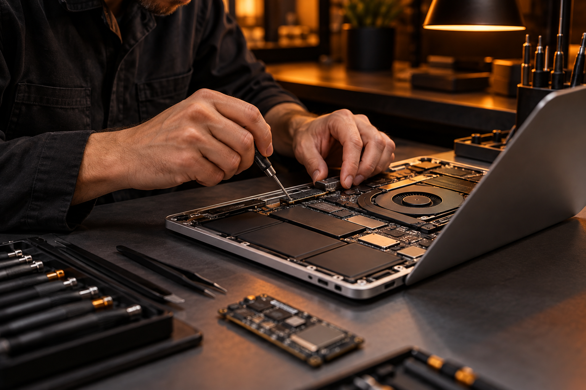

★★★★★
“Assistência técnica top demais, me ajudaram de forma sincera, explicaram o problema e resolveram com excelência.”
Rodrigo RodriguesDo reparo ao upgrade, tudo para o seu notebook, computador e impressora em um só lugar.

Peças, acessórios e equipamentos
para o que você precisa fazer.
Catálogo de demonstração. Itens e valores são exemplos. Consulte modelos, preços e disponibilidade pelo WhatsApp.
Explique o que está acontecendo.
O orçamento começa com uma conversa.
Envie o modelo do equipamento e conte o que você precisa.
Vamos conversar sobre produtos, peças ou manutenção.
Notebooks, computadores, impressoras
e informática em geral.
Experiências reais de clientes da nossa loja e assistência técnica.
“Assistência técnica top demais, me ajudaram de forma sincera, explicaram o problema e resolveram com excelência.”
Rodrigo Rodrigues“Atendimento simplesmente excepcional, com muita educação, atenção, paciência e profissionalismo.”
Anthony Vinicius“Ótimo local, recebi um atendimento excelente e um preço acessível. Resolveram meu problema muito rápido.”
Diego Mota“Ótimos na assistência, excelência em agilidade, atendem super bem e são muito atenciosos.”
Mayara Alves“Um lugar bem aconchegante, atendimento respeitoso e educado, com preço bem acessível.”
Emanuely Victória“Experiência ótima, deixei meu notebook pela manhã e ao meio-dia já fui buscar, com o problema resolvido.”
Larice Ramos